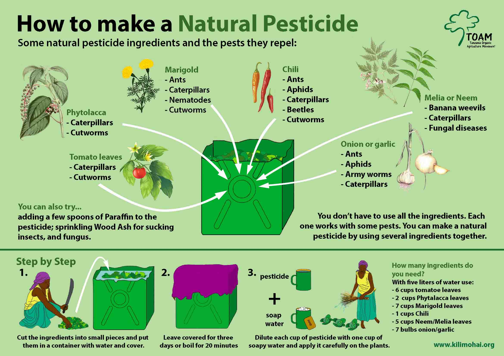

ORGANIC FARMING
రైతే రాజు...
Home
Schemes
AboutUs
ContactUs
సేంద్రీయ వ్యవసాయ రైతులు మీకు స్వాగతం పలుకుతున్నారు..ఈ వెబ్సైట్ సమాచారం వార్తాపత్రికలు, కథనాలు, శాస్త్రీయ ఆధారాలు మరియు ఇంటర్నెట్ మొదలైన అనేక ఫ్లాట్ఫారమ్ల నుండి సేకరిస్తోంది...
organic farming farmers welcomes to you..This website information is gathering from so many flatforms like newspapers ,articles ,scientific proves and internet etc...

...
Explore....